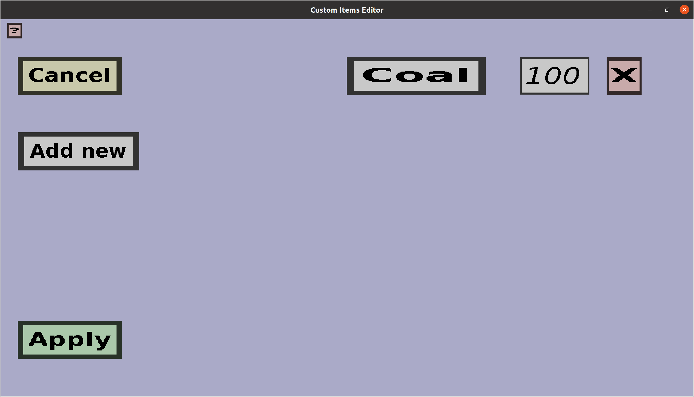

The fuel entries menu can be used to configure which items count as fuel in a given fuel registry.
It is basically a list of items with associated durations (how long a container burns when this
item is used as fuel). If you have a single entry that allows coal to keep the container burning
for 5 seconds, it should look like this:

-
The 'Cancel' button will take you back to the fuel registry edit menu
you came from, without keeping any changed you made in this menu.
-
The 'Apply' button will take you back to the fuel registry edit menu,
and keep all changes made here.
-
The 'Add new' button will add a new entry to the list of entries. It will be an entry with
coal as item and a burning duration of 100 ticks, but you can change this afterwards.
Furthermore, there are a couple of components for every entry that is currently in the entry
list:
-
The left-most button shows the item of the entry (the item that will be treated as fuel).
You can change the item by clicking this button, which takes you to the
input type selection menu, where you can
choose which item you want to be considered fuel.
-
The edit field in the middle determines how long the fuel item will cause the custom
container to burn. This duration is expected to be given in ticks, not
seconds (1 second = 20 ticks). Also, the duration must be a positive integer.
-
The red cross on the right can be used to remove the entry from the list.